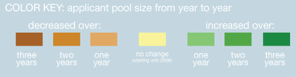

"Global reach: recruitment abroad" is an online Daily Bruin project exploring the university's efforts to expand the out-of-state and international nonresident freshman applicant pool. Previously, more out-of-state students applied as transfers; the growing trend is that these students apply as freshmen instead, according to Robert Cox, manager of the UCLA Office of Analysis and Information Management. With data provided by UCLA Undergraduate Admissions and Relations with Schools, the Daily Bruin mapped out the size of each country's applicant pool for the past four application cycles - fall 2008 to fall 2011. As a country increases or decreases in applicant pool size from year to year, the color and size of the circle change in intensity and radius, respectively. Numbers are approximations, may vary slightly from UCLA Admissions' final enrollment counts. The scale (located at the bottom of the map) is intended to be visually understandable; it is not to scale.
Yes, all 142 countries that UCLA receives applications from are represented on the map. About 17 applicants are not represented because they are stateless or their country of origin is unclear.
Each country for the 2008 map has a baseline color of yellow; 2008 was the first year of data provided. When a country has a yellow circle on any of the fall 2009-2011 maps, it indicates that there was no change from the year before.
If the difference between one year's applicant pool size and the next year's was fewer than four applicantions, the country was considered "no change." For example, Canada decreases from 238 applicants in fall 2008 to 237 in fall 2007. This 1-person change is not large enough to be considered, so Canada's circle remains yellow in 2009. This rule of at least ±5 applicants takes into consideration many of the smaller countries on the map, where the application pool often fluctuates between 1-10 applicants.
This is best illustrated through an example such as Indonesia, where the applicant pool size fluctuates from year to year.

SHARE